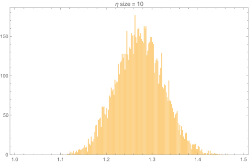
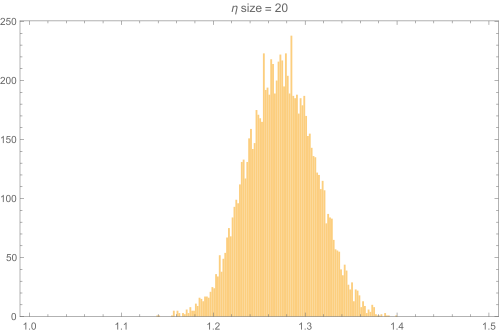
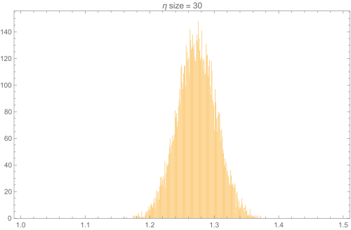
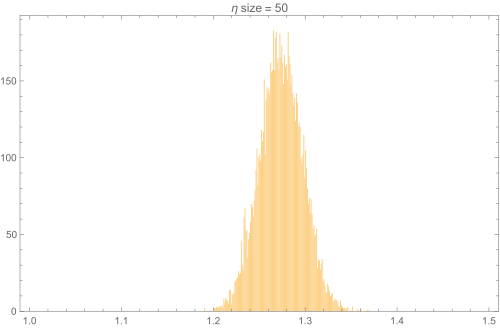
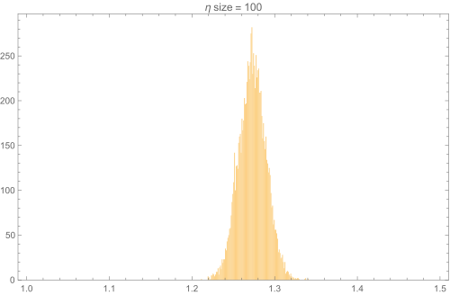

Note: In this section of the text, the author explains several related topics before getting the question. For this reason, I have chosen to not go with the Author's flow.
One of widely used methods that we know about the calculation of the definite integral is the method of infinitesimal rectangles. We get a more and more precise answer as the width of the rectangles decreases. In this page, we will look at the Monte Carlo Method of calculation of definite integrals. The Algorithm is outlined below.After you have these functions setup, there are only few steps to the calculation of the integral (OR) more aptly the estimation of the integral. Using \(\eta\) as per the algorithm outlined above, we estimate the integral. The following series of images shows the integral calculated using various sample sizes. Observe how the estimation of the integral more and more precise when the sample size increases. The accuracy has not changed much but the precision greatly becomes better 😀
    
ClearAll[toIntegrate, probabilityFunction, cdfProbabilityFunction];
toIntegrate[x_] := Sin[0.5 \[Pi] x]
probabilityFunction[x_] :=
Module[{constant = NIntegrate[-(r - 1)^2 + 1, {r, 0, 2}]}, Divide[-(x - 1)^2 + 1, constant]]
probabilityFunction[x_] := PDF[TriangularDistribution[{0, 2}], x]
cdfProbabilityFunction[x_] := Integrate[probabilityFunction[r], {r, 0, x}]
inverseCDFProbabilityFunction[x_] := InverseCDF[TriangularDistribution[{0, 2}], x]
Plot[
{toIntegrate[x], probabilityFunction[x], cdfProbabilityFunction[x]}, {x, 0, 2}
, PlotLegends -> "Expressions"
, AspectRatio -> 0.5
, ImageSize -> 788
, Epilog -> {
{Opacity[0.5], Blue, Dotted, InfiniteLine[{{1, 0}, {1, 1}}]},
{Opacity[0.5], Dotted, Blue, InfiniteLine[{{0, 0.5}, {2, 0.5}}]}
}
]
Histogram[
Mean[With[{\[Xi] = RandomVariate[TriangularDistribution[{0, 2}]]},
toIntegrate[\[Xi]] / probabilityFunction[\[Xi]]] & /@
Range@10] & /@ Range[10000], 200]
This topic is discussed on page 61 of the PDF below. Feel free to download the document for future references